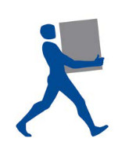
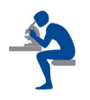
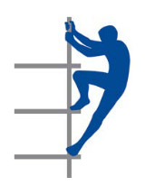
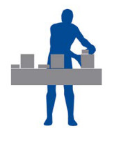
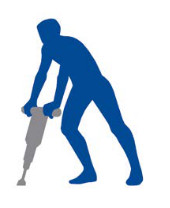

4 Zu welchen Beschwerden oder Erkrankungen können diese Belastungen führen?4 Zu welchen Beschwerden oder Erkrankungen können diese Belastungen führen?
4 Zu welchen Beschwerden oder Erkrankungen können diese Belastungen führen?4 Zu welchen Beschwerden oder Erkrankungen können diese Belastungen führen?Kurzfristig hohe oder gar extreme Belastungen des Muskel-Skelett-Systems führen häufig zu vorübergehenden Beschwerden. Liegen diese Belastungen dauerhaft und langfristig vor, können bleibende Gesundheitsschäden entstehen. Allerdings muss nicht jeder, der hohen oder extremen Belastungen ausgesetzt ist, zwangsläufig mit vorübergehenden oder bleibenden Beeinträchtigungen rechnen. Die Grenze, von der an bleibende Schädigungen des Muskel-Skelett-Systems auftreten, ist von Mensch zu Mensch verschieden. Sie hängt auch entscheidend davon ab, wie gut Rücken, Gelenke und Muskeln trainiert sind: "Wer rastet, der rostet". Richtiges und konsequentes Training stärkt nicht nur die Muskulatur, sondern auch die Bänder, Sehnen und Knochen. Höhere Belastungen wirken dann weniger schädigend auf die Gesundheit.
Die Ursachen für Beschwerden des Rückens und der Gelenke sind vielfältig. Schmerzen können ein Hinweis auf eine Fehlbelastung, Überlastung, Funktionsstörung oder eine Schädigung sein. Beschwerden können kurzfristig als Folge hoher Belastung auftreten. Durch Entlastung und Erholung oder durch Anpassung und Training bilden sie sich in der Regel zurück. Wenn Schmerzen eine dauerhafte Folge von Über- und Fehlbelastungen sind, können sie auf Funktionsstörungen, wie Muskelverspannungen, Sehnenreizungen oder Schäden an Gelenken oder Bandscheiben hinweisen. Schmerzen sollten deshalb immer als Warnsignal ernst genommen werden. Denn man sollte bereits frühzeitig auf Beschwerden reagieren, um dadurch später schlimmere Erkrankungen zu vermeiden.
Die Medizin geht davon aus, dass bei einem Großteil der Schmerzpatientinnen und Schmerzpatienten die Psyche eine bedeutende Rolle spielt. Veranlagung, Verhalten und die Vorgeschichte der Patientinnen und Patienten haben großen Einfluss, ob und wie stark sie den Schmerz fühlen.
Wichtig ist aber auch: Schäden an der Knochenstruktur oder an den Bandscheiben, die z. B. in Röntgenaufnahmen oder anderen Verfahren sichtbar werden, führen nicht zwangsläufig zu Schmerzen. Der menschliche Organismus ist sehr anpassungsfähig und in der Lage, die Folgen von Erkrankungen oder Unfällen auszugleichen und trotz nachweisbarer Schäden schmerzfrei zu bleiben.
Tätigkeiten mit manueller Lastenhandhabung
Das Handhaben von Lasten beansprucht besonders Rückenmuskulatur, Bandscheiben, Bandapparat und Wirbelkörper. Dabei trägt der untere Rücken zusätzlich zur Last auch das Gewicht des eigenen Oberkörpers.

Aber auch die Muskulatur des Nackens, der Schultern, der Arme und Beine sowie die großen Gelenke wie Knie und Hüfte werden belastet.
Bei ständig vorkommender hoher Belastung kann sich die Muskulatur nicht ausreichend erholen. Die Folge sind schmerzhafte Verspannungen und Einschränkungen der Beweglichkeit. Dadurch wird auch die Reaktionsmöglichkeit der Muskulatur, auf plötzliche Ereignisse angepasst zu antworten, verlangsamt oder eingeschränkt. Beim Stolpern, Rutschen oder Stürzen wird hierdurch das Unfallrisiko erhöht.
Bei langjährigen hohen oder extremen Belastungen kann es arbeitsbedingt zur Verstärkung der altersbedingten Veränderungen der Wirbelsäule in Form von Bandscheibenschäden oder der großen Gelenke in Form von Arthrose kommen.
Tätigkeiten mit erzwungenen Körperhaltungen
Die Arbeit in gebeugter Körperhaltung ruft hohe Belastungen hervor. Die Rückenmuskulatur muss den nach vorne gebeugten Oberkörper und eventuell zusätzliche Lasten, wie z. B. Werkzeuge o. ä., tragen. Das belastet besonders den unteren Rücken, die Hüfte und die Oberschenkelregion. Die Beschwerden, die durch Arbeiten in gebeugter Körperhaltung hervorgerufen werden, sind vergleichbar mit denen bei manueller Lastenhandhabung.

Andauerndes Arbeiten mit den Armen über Schulterniveau gilt als besonders anstrengend. Diese Haltung beansprucht in erster Linie die Schultermuskulatur und die Schultergelenke sowie den Nackenbereich. Die Folgen können schmerzhafte Verspannungen in diesen Körperregionen sein, die aber auch in den Lendenbereich fortgeleitet werden können. Langfristig können Arthrosen der Halswirbelsäule sowie der Schulter- und Armgelenke entstehen.
Auch Arbeiten im Knien und Hocken kann sehr belastend sein. Durch diese Belastungen kann es bei langjähriger Tätigkeit zu Schäden an den Kniegelenken in Form von Arthrosen, Meniskuserkrankungen oder Schleimbeutelentzündungen kommen. Da bei diesen Tätigkeiten darüber hinaus häufig mit vorgeneigtem Oberkörper gearbeitet wird, können zusätzlich Beschwerden im unteren Rücken entstehen.
Sitzen in fixierter Haltung, z. B. beim Arbeiten am Mikroskop, oder dauerhaftes Stehen ohne die Möglichkeit der Entlastung durch Haltungswechsel, belasten das Muskel-Skelett-System und können zu Beschwerden führen. Das Sitzen auf dem Bürostuhl führt bei üblicher Büroarbeit zwar zu Bewegungsmangel, lässt aber Veränderungen der Sitzhaltung zu (dynamisches Sitzen) und fällt daher nicht unter erzwungene Körperhaltungen.
Tätigkeiten mit erhöhten Ganzkörperkräften oder Körperfortbewegung
Tätigkeiten mit erhöhter Belastung durch Körperfortbewegung treten oft in Verbindung mit schwer zugänglichen Arbeitsstellen auf, z. B. beim Besteigen von Kranen, Windenergieanlagen und Freileitungsmasten sowie beim Lastentransport über Treppen oder mit dem Fahrrad. Sie belasten den gesamten Körper und erfordern eine gute körperliche Leistungsfähigkeit. Insbesondere können das Herz-Kreislauf-System, aber auch die Beine, die großen Gelenke wie Knie und Hüfte sowie der untere Rücken betroffen sein.

Tätigkeiten mit erhöhter Belastung durch Ganzkörperkräfte können in unterschiedlichen Formen auftreten:
Beim Arbeiten mit Hebeln und Brechstangen oder beim Bewegen von Menschen können Kräfte auftreten, die zu einer hohen Belastung des gesamten Körpers führen.
Bei der Bedienung von Arbeitsmitteln, etwa dem Halten und Drücken einer Zange o. ä., können gegebenenfalls Beschwerden im gesamten Arm bis zum Schulter-Nackenbereich entstehen.
Sich ständig wiederholende (repetitive) Tätigkeiten / manuelle Arbeitsprozesse
Wenn Arbeiten sich besonders häufig wiederholen oder die Hände als Werkzeug eingesetzt werden, etwa beim Klopfen, Hämmern, Drehen oder Drücken, können die Muskeln und Sehnen überfordert oder das Handskelett geschädigt werden. Hierdurch können Schmerzen oder Beschwerden entstehen, insbesondere im Bereich der Hände, Arme und Schultern. Liegen diese Beschwerden dauerhaft vor, können krankhafte Veränderungen der Muskeln und der Sehnenansätze, Durchblutungsstörungen oder Schädigungen von Nerven entstehen, die z. B. zum Carpaltunnel-Syndrom oder zu einer Arthrose führen können.

Tätigkeiten mit Einwirkungen von Hand-Arm- oder Ganzkörpervibrationen
Hand-Arm- oder Ganzkörpervibrationen können als Einzelbelastungen, aber auch in Verbindung mit den zuvor dargestellten Belastungen eine Gefährdung darstellen. Durch sie können Rücken- und Gelenkbeschwerden, insbesondere der Wirbelsäule sowie der Hand-Arm-Gelenke, entstehen oder verstärkt werden. Hand-Arm-Vibrationen können darüber hinaus Nervenfunktions- oder Durchblutungsstörungen an den Händen verursachen, wie Carpaltunnel-Syndrom oder "Weißfingerkrankheit".
